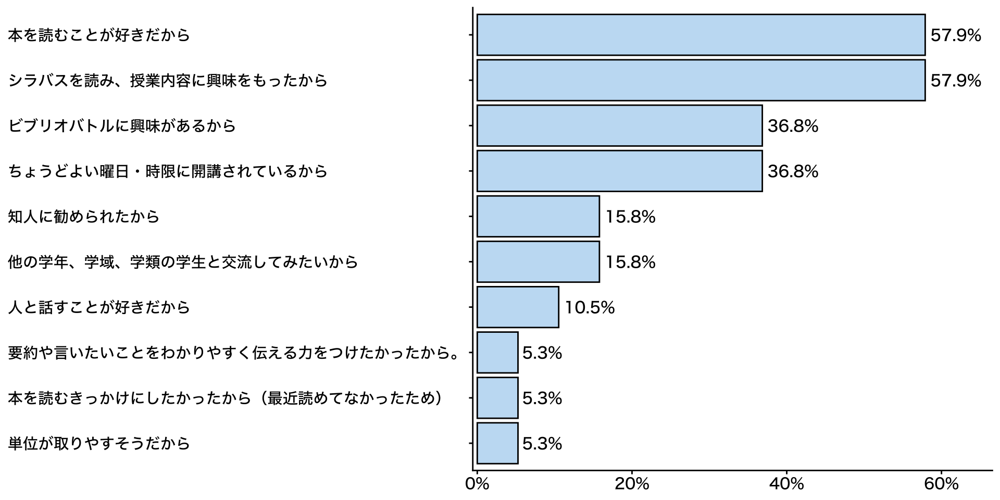
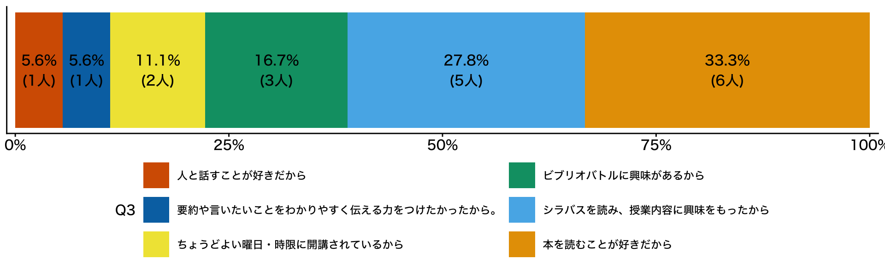
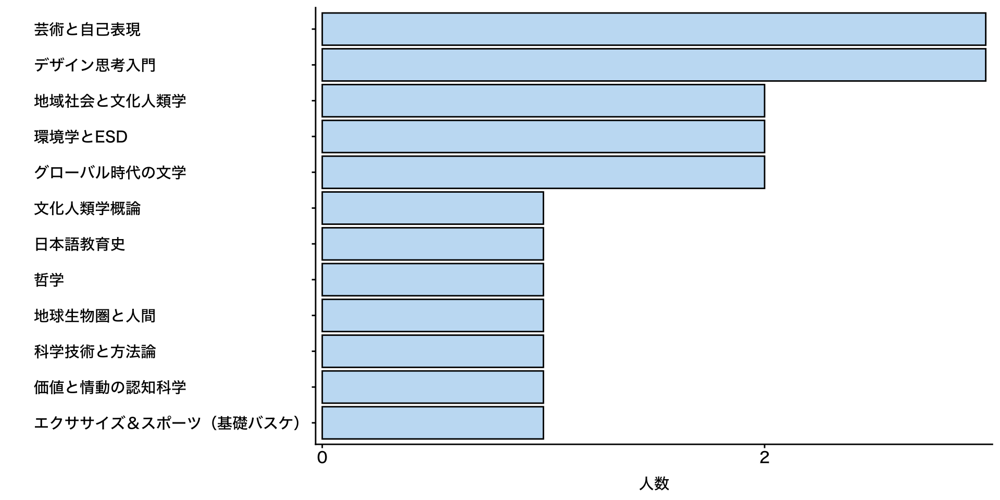
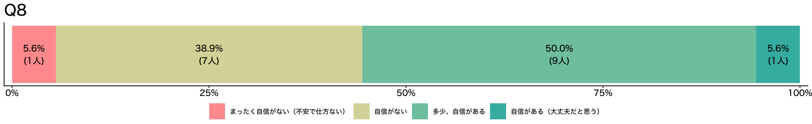
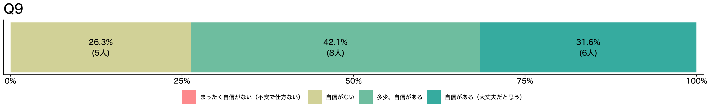
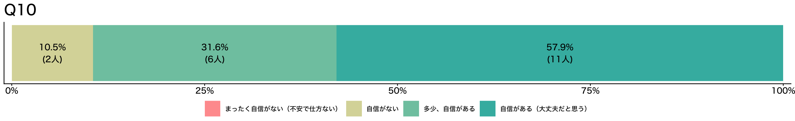
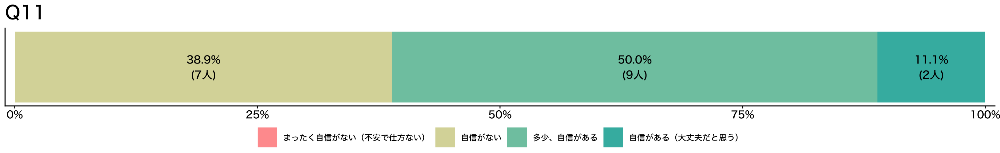
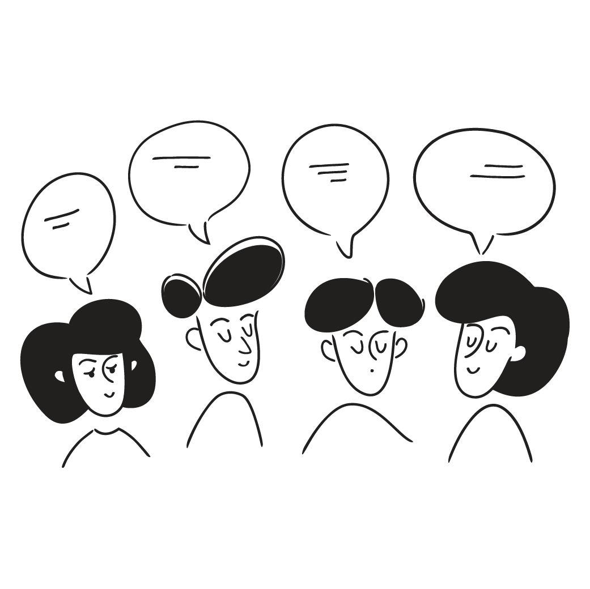

ビブリオバトル入門《2026》
#2 好きな本を紹介しよう①：第1ラウンド
![]()
Ⅰ. 授業の感想：前回の振り返り
授業の感想
私は高校生の時期に本に読みことにハマり、たくさんの本を読みましたが、その本のほとんどは学術的なものではなく推理小説などの物語の本でした。そのため本講義を通して新しいジャンルの本を読むことができうれしいと感じました。自己紹介の時などであまり本を読まない人やたくさん読む人いろいろな人がいたため、どのような本が紹介されるのか楽しみです（高橋さん）。
高校に入ってから本を読む量が一気に少なくなり、大学に入ってからは新生活で忙しいのもあってさらにその機会が減ってしまったので、この授業をその機会にしたいと思う。自分は基本的に推理小説かそれに準ずる本しか読まず、その他のジャンルは興味も持っていなかったが、この授業をきっかけに他の人が読んでいるジャンルで面白いものがあれば、それを読んでみたいと思うし、新しいジャンルに挑戦するいいチャンスにしたい。（大塚さん）
私は日ごろから読書をしているが、ちょっとした悩みとして、「気に入った本ばかりローテーションして読む」という癖がついている。というのも新しい本を買ってもしそれがあまり自分に合わなかった時のショックが大きいからであり、そのためなかなか新しい本と出合う機会が少ない。この授業を通して、自分からは関わることの無かったであろう本に出合えれば良いと思う。（増川さん）
授業の感想
自分がビブリオバトルという言葉を初めて聞いたのは小学生高学年の頃だったと記憶しているが、それがどのような経緯でなにを目的として始まったものなのかは知らなかったため、本日の講義でビブリオバトルのもともとのコンセプトが専門分野の枠を超えて学術書や論文を紹介しあうものだと知り驚いた。私も四年生として卒業研究を進める中で、どうしても自分の専門に知識や関心が偏りがちなため、この授業を機により幅広い学問へ触れたいと思う。（松澤さん）
相手の話を決して否定しないことが大切だと再認識しました。また、同じグループで、国際の5年生の方がいて、いろんな境遇の方と好きな本を共有できるいい機会だと感じました。この機会に、自分も好きな種類の本に固執せず、様々な分野の本を読んでみようと思いました。アドリブで話すのが苦手なので、スラスラ話せる力を鍛える機会にもしたいと思います。（酒井さん）
GPAによって選べる研究室が変わるため、SやAの評価が取れるように、感想やブックカードの提出を忘れないようにしようと思いました。5分間プレゼンテーションするのが、結構長いなと思ったので、話すネタに困らないように、ブックカードに要点を分かりやすく書こうと思いました。アイスブレイクで、高校時代の話や、サークルの話で盛り上がったので、楽しかったです。ブックカードの書き方や授業のスケジュールをしっかり覚えて、授業の準備をしっかりしたいと思いました。（田畑さん）
Ⅱ. 初回アンケート：このクラスってどんなクラス？
初回アンケート > Q2. 受講理由（複数選択可）

初回アンケート > Q3. 受講理由（一択）

初回アンケート > Q4. 好きな授業

初回アンケート > 自己認識（Q8-Q9）
本の選択と紹介

グループワーク

初回アンケート > 自己認識（Q10-Q11）
他分野への関心

プレゼンテーション

Ⅲ. ビブリオバトル：好きな本を紹介しよう 第1ラウンド
ブクログ
好きな本

授業の約束（教員との約束）
この授業はグループワーク中心の授業です。教員一人では授業を作ることができません
- 教員：学びの空間設計者
- 受講生：コンテンツ制作者
皆さんも授業を作るメンバーとして、以下の3つを心がけて下さい
- 元気に毎回出席する（ただし無理は禁物）
- グループワークには積極的に参加する
- 提出物はちゃんと出す

気分が悪くなるコメントとそのフォロー
この本、面白かったよ
💯 👍 ☺️
それって中学生が読む本じゃないの？恥ずかしくないのかな？🤭
🤮🤮🤮🤮🤮🤮
🤔（この人、大丈夫かな、頭）
本に年齢制限でもあるの？ 面白いと思ったなら、それでいいじゃん
（ありがとう🥳）
グループワークの心理的安全性
Important重要 | 「この場では安心して意見を言える」という感覚が何より大切です
- グループワークで話したことは外に持ち出さない
- 相手の意見を批判しない（マウンティング行為を含む）
- グルームのメンバー全員が「つながり」を生む声かけを心がける（「◯◯さんはどう思いますか？」）
グループワークの心理的安全性
Warning禁止 | マウンティング行為
- 知識ひけらかし型：「この本は原著で読んでるから、翻訳はちょっとね」/ 「作者の別の論文を読んでないと本当の意味は分からないよ」
- 先取り型：「あー、この後の展開は◯◯だから、そこまで読まないと面白さはわからないよ」/「私、もう続編も全部読んでるから」
- 比較優位型：「その感想は初心者っぽいね」 / 「自分はもっと難しい本を普段読んでるから、この本は物足りないかな」
- 発言の矮小化型：「その見方は浅いよ、本当はこう読むべきなんだ」 / 「その感想はよくあるけど、重要なのは別のところだよ」 / 「それってあなたの感想ですよね」
アイスブレイク
嘘つき自己紹介
- 嘘を突き通したら勝ち / 嘘を見抜いたら勝ち
- A4の紙を4つにおり、十字の線を入れて”4つの枠”を作る
- 左上に名前を書く。残り3つの枠に本人のこと紹介するキーワードなどを書く。ただし、1つだけ嘘を書く
- 順番に紙に書いた内容を説明する。1周目はすべて本当のように話す（まだどれが嘘かのネタバレはしない）
- 全員が回ったら、最初に話をした人が再度紙を見せて、聞き手の人が、どれが嘘かを当てる。その後ネタバレをして、実はなどと少しストーリーを語る
- 次の人が同じように、紙を見せて嘘がどれかを聞き手に当ててもらいネタバレをする（以下同様）
出典：小笠原祐司「初回の授業で「嘘つき自己紹介」は知り合い同士がいてもおすすめ」
アイスブレイク > 嘘つき自己紹介
嘘つき自己紹介の例
ルールがわからない、ルールはわかったが何も思い浮かばない人のための例示です。これに縛られる必要はまったくありません
- テーマを決めて嘘をつく
- 好きなポケモンの中に、嫌いなポケモンを混ぜる
- 夏休みの過ごし方の中に、夏休みに行っていないことを混ぜる
- 属性などに嘘を混ぜる
- 出身地；アルバイト先；長女です；甲子園出場経験あり；教師志望
Important注意事項
笑えない嘘はやめましょう
アイスブレイク > 嘘つき自己紹介 > 記入例
呼ばれたい名前
（位置絶対）
（位置絶対）
本当のこと
（位置自由）
（位置自由）
本当のこと
（位置自由）
（位置自由）
嘘
（位置自由）
（位置自由）
アイスブレイク > 嘘つき自己紹介 > 記入例
先生
中国
アリストテレス
コーヒー
アイスブレイク > 嘘つき自己紹介
今日のタイムキーパー：スペード♠️
- クラス全体で時間管理しません。以下の時間に沿って、グループ毎で時間管理して下さい（若干であれば、伸びても大丈夫です）。タイムキーパーの裁量とします（次のビブリオバトルも同様）
タイムライン
- 考える時間：3分
- 嘘つき自己紹介 1回目（嘘をつく）：8分（一人2分程度）
- 嘘つき自己紹介 2回目（嘘を当てる）：8分（一人2分程度）
- 質問して、嘘を暴こう
ビブリオバトル：好きな本を紹介しよう①
本の紹介：5分（最低4分30秒は話すこと）
質疑応答：3分（しっかり3分間、質疑応答すること）
アフターセッション：5分（しっかり5分間話し合うこと）
- グループチャンプ本を決めて下さい
- 配布するカードに、日付、グループチャンプ本のタイトル、その受講生の名前、簡単な理由を書いて提出して下さい
- 残りの時間は、ブックカードのまとめ方、質疑応答の続きなど、各グループで有効に活用して下さい
Ⅳ. グループチャンプ本プレゼンテーション
グループチャンプ本プレゼンテーション
- 各グループでチャンプ本に選ばれた方は、トランプを引いて下さい。ジョーカーが出た人が今日の発表者です
本の紹介：5分
- 最低4分30秒
質疑応答：3分
積極的に質問して下さい。ゼミや研究会で一番、辛いことは、誰からも質問が出ないことです
Ⅴ. 次回の授業と宿題
次回の授業と宿題
宿題
- 授業の感想（回答先：Google フォーム、締め切り：10月16日（金）23時59分）
- ブックカードの補足（補足したい人のみ。補足した場合であっても再提出は不要です）
- （ブックカード：研究分野の本を紹介しよう）締め切り：10月28日授業開始前まで
先週、出席していない人は「初回の授業の感想（初回アンケートを含む）」の初回アンケートにもお答え下さい（Q1は「受講登録前」とお書き下さい）。
持参物
- ブックカードと、選択した本